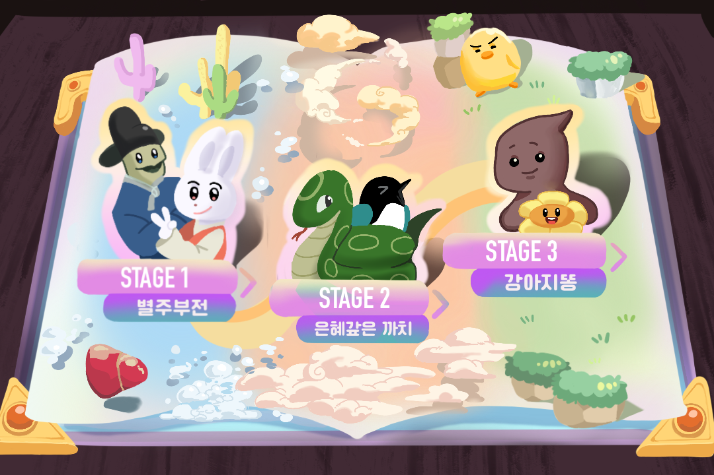
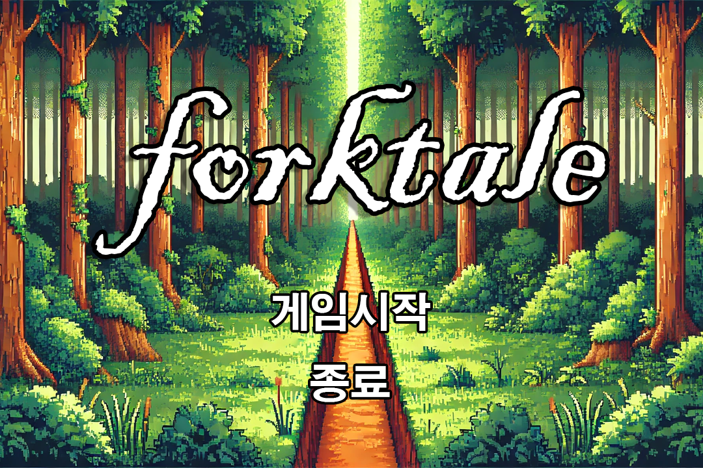
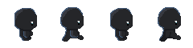

folktale
" 게임 프로그래밍 수업에서 진행된 팀 프로젝트로 미니 게임 3개로 구성된 .exe 플래시 게임 "
| 강아지똥 | : | 다가오는 몬스터를 처치하며 민들레를 지키는 게임 |
| 별주부전 | : | 미로 속에서 토끼 간을 구하여 용왕을 살리는 게임 |
| 은혜 갚은 까치 | : | 쫓아오는 구렁이를 피해 종을 울려 선비를 지키는 게임 |



메인 페이지 이미지 소스